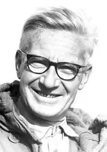

Вивчав роль стимулів у груповому поведінці тварин (бджіл, риб, чайок), виборчу реакцію на чинники середовища, взаємозв'язок набутих і вроджених поведінкових компонентів, еволюцію поведінки і пристосувальні функції.
ТІНБЕРГЕН, НІКОЛАС (Tinbergen, Nikolaas) (1907-1988), нідерландський зоопсихолог, удостоєний в 1973 Нобелівської премії з фізіології та медицини (спільно з австрійськими натуралістами К. Фрішем і К. Лоренцем) за дослідження індивідуального і групового поведінки тварин. Народився 15 квітня 1907 року в Гаазі. Закінчив Лейденський університет, в 1932 році захистив докторську дисертацію. Працював у науковій експедиції в Арктиці. Після повернення в Лейден читав лекції в університеті.В 1942 році разом з групою провідних професорів був укладений в концентраційний табір за виступи проти влади. Був звільнений з табору в 1945. В 1947 р. став професором експериментальної зоології та завідувачем кафедри зоології Лейденського університету. З 1949 працював в Оксфордському університеті (з 1966 – на посаді професора).
Основна область наукових досліджень Тінбергена – поведінку тварин у природних умовах. Разом з К. Лоренцем і К. Фрішем Тінберген створив вчення про інстинктивному поводженні тварин та його розвитку у онто — і філогенезі. Вивчав роль стимулів у груповому поведінці тварин (бджіл, риб, чайок), виборчу реакцію на чинники середовища, взаємозв'язок набутих і вроджених поведінкових компонентів, еволюцію поведінки і пристосувальні функції. Спостереження за тваринами Тінберген намагався використати для пояснення природи агресивності людини, вважаючи, що це якість виникло у людини в ті часи, коли він почав полювати і вживати в їжу м'ясо. Серед робіт Тінбергена – Вивчення інстинкту (The Study of Instinct, 1951); Соціальна поведінка тварин (Social Behavior in Animals, 1953; рос. переклад 1993); Світ сріблястою чайки (Herring Gull's World, 1953, 2-е изд. 1961; рос. переклад 1974); Допитливі натуралісти (Curious Naturalists, 1958); Поведінка тварин (Animal Behavior, 1965; рос. переклад 1985). Помер Тінберген в Оксфорді 21 грудня 1988.